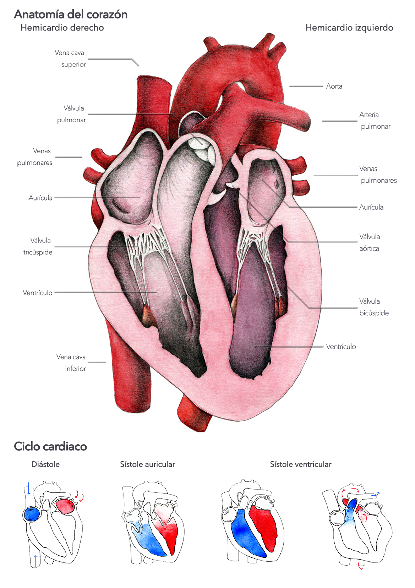

1.2. El corazón
¿Sabías que la misión fundamental del aparato circulatorio es mantener la sangre en circulación, para aportar a los tejidos el oxígeno y las sustancias para su metabolismo y además, retirar de éstos los residuos?
Para ello colaboran el corazón, que impulsa la sangre, y los vasos que la distribuyen y canalizan de nuevo hacia el corazón. Está en íntima relación con el pulmón, en el que la sangre adquiere oxígeno y se desprende anhídrido carbónico.
El corazón es el órgano principal del sistema cardiovascular.
Es un músculo hueco que pesa entre 225 y 310 gramos. Actúa como una bomba aspirante que impulsa la sangre por las arterias, venas y capilares, la mantiene en constante movimiento y a una presión adecuada.
El corazón está formado por varias capas que, desde fuera hacia dentro son:
- Pericardio: es de consistencia fibrosa y dura, envolviendo al corazón a modo de saco.
- Miocardio: es la capa media y de estructura muscular, siendo más gruesa en los ventrículos que en las aurículas.
- Endocardio: es una membrana que tapiza el interior del corazón. Es aquí donde se localizan las válvulas cardiacas.
El corazón está dividido por dos tabiques, uno que separa las aurículas, y otro los ventrículos. De esta forma quedan en su interior cuatro cavidades: dos aurículas y dos ventrículos.
¿Cómo circula la sangre por el corazón?
- A la aurícula derecha llega la sangre procedente de las venas cava superior y cava inferior y a la aurícula izquierda, llega la sangre oxigenada de los pulmones a través de las cuatro venas pulmonares.
- Al ventrículo derecho llega la sangre desde la aurícula derecha, que sale del ventrículo por la arteria pulmonar hacia los pulmones.
- Al ventrículo izquierdo, llega la sangre de la aurícula izquierda, siendo impulsada a través de la arteria aorta a todo el organismo.
Las válvulas cardíacas impiden el retroceso de la sangre. Hacen que ésta vaya en una sola dirección, desde las aurículas a los ventrículos y desde éstos a las arterias.
El ciclo cardiaco comprende la contracción de las aurículas, llamada sístole auricular, la contracción de los ventrículos, llamada sístole ventricular y la fase de recuperación o reposo, llamada diástole.

Imagen de Laura Macías Álvarez en Wikimedia Commons bajo licencia CC
Pregunta Verdadero-Falso
Retroalimentación
Falso
La cubierta del corazón recibe el nombre de pericardio.
Retroalimentación
Verdadero
Retroalimentación
Falso
Son las aurículas las cavidades que reciben la sangre de las venas y también son llamadas cavidades receptoras.
Retroalimentación
Verdadero
Retroalimentación
Falso
La función de la válvula semilunar aórtica es impedir el retorno sanguíneo hacia el ventrículo izquierdo.